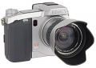

无忌
器材库
全部器材
产品年表
名词百科
榜单
器材库
> 不可换镜头数码相机 > Dimage 7

美能达
Dimage 7
4.19
综合评分
分类
不可换镜头数码相机
点评
0 条
图片
0 张
评测
0 篇
Dimage 7 采用492万像素CCD和7倍光学变焦镜头，搭载1.8英寸液晶显示屏。
产品类型
不可换镜头数码相机
综合评分
4.19分
无忌评测
暂无评测
规格参数
网友点评
(0)
产品图 / 样片
(0)
评测文章
(0)
规格总览
发布日期
2001-02-11
停产
是
影像规格
影像传感器
CCD
影像传感器尺寸
2/3英寸
总像素
524万
有效像素
492万
静态图像尺寸
2560×1920, 1600×1200, 1280×960, 640×480
静态图像格式
JPEG, TIFF, RAW
画幅比
4:3
短片尺寸
320×240
镜头和对焦
镜头结构
16片/13组
非球面镜片
2片
低/超低色散镜片
2片
焦距
7.2mm-50.8mm
等效35mm画幅焦距
28mm-200mm
最大光圈
f/2.8-f/3.5
光学变焦
7倍
数码变焦
2倍
最近对焦距离
50cm, 微距25cm
自动对焦系统
对比度检测
对焦模式
单次AF, 连续AF, MF
曝光控制
测光模式
中央重点测光, 多分区评价测光, 点测光
曝光模式
P（程序自动曝光）, 场景选择, A（光圈优先自动曝光）, S（快门速度优先自动曝光）, M（手动测光曝光）
场景模式
肖像, 运动, 日落, 夜晚, 文本
快门速度
4 - 1/2000秒
曝光补偿
±2EV以1/3EV级调整
自动曝光锁
有
自动包围曝光
3幅, 以1/3、1/2或1EV为步长
ISO感光度
100, 200, 400, 800, 自动
白平衡
日光, 阴天, 荧光灯, 自定义, 自动, 钨丝灯
自拍
10秒
连拍
1.1 fps，最多4张
闪光灯
内置闪光灯
弹出式
闪光模式
自动, 慢速同步, 减轻/消除红眼, 强制闪光, 关闭
闪光涵盖范围
广角：0.5-3.8m；长焦：0.5-3m
闪光补偿
±2EV以1/3EV级调整
外接闪光灯
3600HS(D), 5600HS(D), Macro Twin Flash 2400, Macro Ring Flash 1200
取景规格
取景器
电子取景器
取景器像素
7.1万
LCD类型
彩色TFT LCD
LCD尺寸
1.8英寸
LCD像素
11.2万
文件输入/输出
存储卡
CF, Microdrive
数据接口
USB
视频/音频接口
Video 输出 (NTSC/PAL)
配件端口
热靴, 脚架螺丝孔
支持打印协议
DPOF, PIM
电源
电池
4节AA电池
外观
颜色
银色
尺寸
117×91×113mm
重量
603g
该产品暂无存档的网友点评
该产品暂无存档的产品图
评测 / 相关文章
该产品暂无存档的评测文章